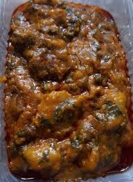

Ekpang Nkukwo Recipe

Ingredients
- Cocoyam
- Wateryam
- Dry fish
- Perewinkle
- Palm oil
- Seasoning cubes
- Salt
- Beef/kpomo
- Crayfish
- pepper
- Water
- Scent leaves
Steps
- Peel the water yam and cocoyam, wash them thoroughly and cut into chunks, with a wooden greater, great the two togethe.r
- Once done, mix them thoroughly together with a wooden spoon and then add some seasoning cubes and salt. Mix the paste again to ensure it goes round.
- Season your dry fish with knor and salt, then boil to create stock and also unleash all the flavour of the dry fish.
- Cut the cocoyam leaves to small size and wash.
- Add palm oil to your cooking pot and shake it so as the oil will go round the pot, (this is to prevent the Ekpang from burning.)
- start wrapping the paste with the cocoyam leaves and drop carefully in the pot.
- Add the already cut perewinkles, kpomo, dry fish, salt, seasoning cubes, crayfish, and pepper, then set the pot aside.
- Boil some water and ensure you bring it to boiling point and then pour it into the pot of ekpang, cover it and put it on fire (Please do not stir).
- Allow the ekpang to cook for about 30 minutes before you stir. Cover it again and still allow it cook.
- Keep stirring until you're sure it is well cooked. You can add some more water if it looks too dry.
- Once you're sure it is well cooked, add some palm oil and the sliced scent leaves.
- Your ekpang dish is ready, bring it down from the fire and serve